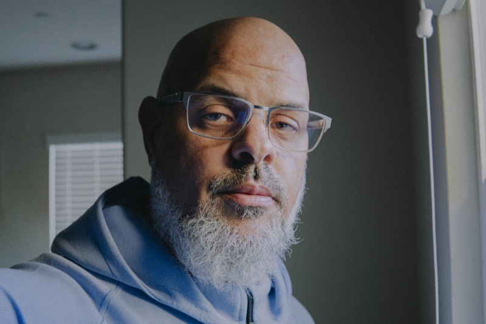

Community
Black Lives Matter & Systemic Racism
A Conversation with Dr. Abdullah bin Hamid Ali
It is seldom these days to have a civil conversation even when both parties stand ardently in their respective camps. I greatly enjoyed my conversation with Dr. Ali from the Lamppost Education Initiative. May Allah put benefit in it for us and our community and make us from those who argue, albeit with passion, with adab.
For those interested, these are a few of the sources I referenced in the talk or used to prepare for it:
- Perry — More Beautiful and More Terrible
- Shapiro — The Hidden Cost of Being African American: How Wealth Perpetuates Inequality
- Olson — Whiteness and the Polarization of American Politics
- Baradaran — The Color of Money
- Lipsitz — How Racism Takes Place
- Sugrue — The Origins of the Urban Crisis
Jazakum’Allahu khayran everyone today for your time.
Tagged:
Race
Community
Dialogue

Written by
Imam Marc Manley
Resident Imam, Middle Ground · Host of the Middle Ground Podcast